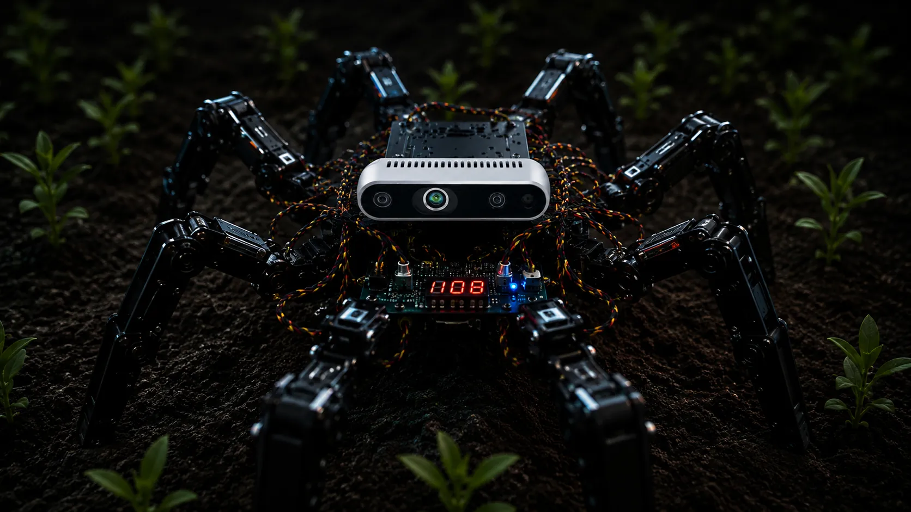
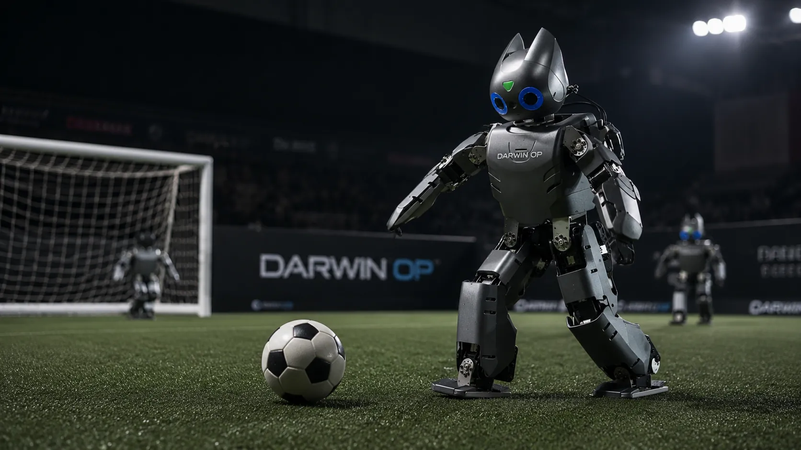
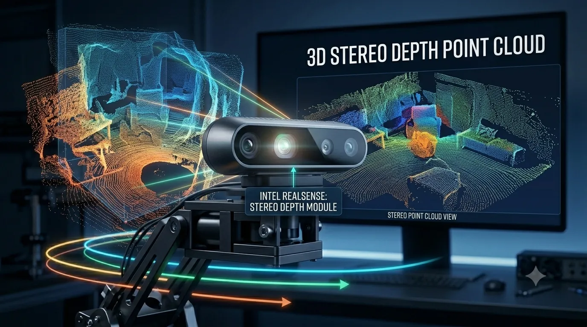
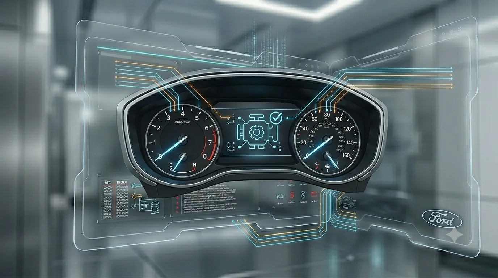

Featured Projects
Láak Chatbot
Láak Chatbot is an intelligent assistant I developed as a final project for my Master's degree in Artificial Intelligence.
This chatbot was designed to accompany and guide new members through their onboarding process, offering personalized responses aligned with each organization's culture and needs.
With an intuitive interface and a fully personalized approach, Láak Chatbot demonstrates the potential of AI to transform the way we welcome and train people.
2025
Master's Degree Project

Hexapod Robot
It consists of the design and implementation of a hexapod robot inspired by the locomotion of a common ant,
integrating an advanced fuzzy control system and artificial vision for the detection and analysis of pests in vegetable crops.
The robot was designed to navigate and inspect hard-to-access agricultural areas where traditional wheeled robots are ineffective.
Using a bio-inspired gait pattern and stereoscopic vision,
it can identify targets and adjust its trajectory precisely, maintaining high stability even on irregular terrain.
2020
Bachelor's Degree Project
Fleet Vehicle Management Platform
A digital platform developed to streamline vehicle registration
and administrative processes for companies managing large vehicle fleets.
The solution combines a public-facing website with a centralized
workflow management system for tracking procedures and service requests.
Fleet managers can search using their company's RFC to monitor
the status of active procedures in real time, while administrators
manage updates through a custom Python application integrated with
a cloud database and Excel-based workflows.
2026
Business Process Automation Project

Autonomous Humanoid Robot (DARwIn-OP)
Led a university engineering team to program a DARwIn-OP humanoid robot for
international competitions and live entertainment. Engineered autonomous
capabilities using C++ and computer vision within a Linux environment, enabling
the robot to dynamically run, detect and kick objects, navigate obstacles, and
perform choreographed routines.
2019
Robotics Team Lead

Intel RealSense & OpenVINO Demo Suite
RealSense AI Suite is an interactive spatial perception platform built
with C++ and Python to demonstrate stereoscopic vision. See how integrating Intel
OpenVINO enables ultra-low latency 3D mapping, obstacle tracking, and object localization
directly on edge hardware without GPU dependencies.
2021
Software Development & Marketing Demos

Ford AutoTest AI Agent Suite
Ford AutoTest AI Suite is a multi-agent platform developed at Ford GTBC that
translates natural language into executable Python hardware test scripts.
See how specialized AI agents automate validation and bridge the gap between BDD
Gherkin syntax and physical ECUs.
2025
Business Process Automation Project

Ford IPC Specification Auditor
Ford IPC Specification Auditor is an automated specification auditing tool developed at Ford's Global
Technology and Business Center (GTBC) to validate documentation consistency for Instrument
Panel Clusters (IPC). Engineered with Python and Flet, the platform allows test managers and
engineers to upload complex vehicle configuration files and instantly cross-reference technical
specifications, diagnostic trouble codes (DTC), and visual target assets (such as Tell-Tales / RTTs).
2024
Business Process Automation Project